从 0 开始做网站，你需要知道这 3 个方面
从新建画布到导航选择，再到布局与适配——一篇讲清网站设计起步阶段最关键的三个决策：画布尺寸如何依据分辨率市场占比来定、侧导航与顶导航分别适合什么类型的产品、以及固定宽度、Responsive layout 与 Adaptive layout 三种适配方式的取舍。
本文整理自一篇关于网站设计入门的原创文章，版权归原作者所有。以下为原文内容整理，配图与论述顺序保持原文结构。
01 / 画布与内容区：从分辨率说起
从 0 到 1 设计网站（除了产品用户调研外），第一步就是新建画布。画布的尺寸取决于应用设备分辨率的市场占有率。下图是网上可查到的 2021 年 PC 端分辨率市场占比表。
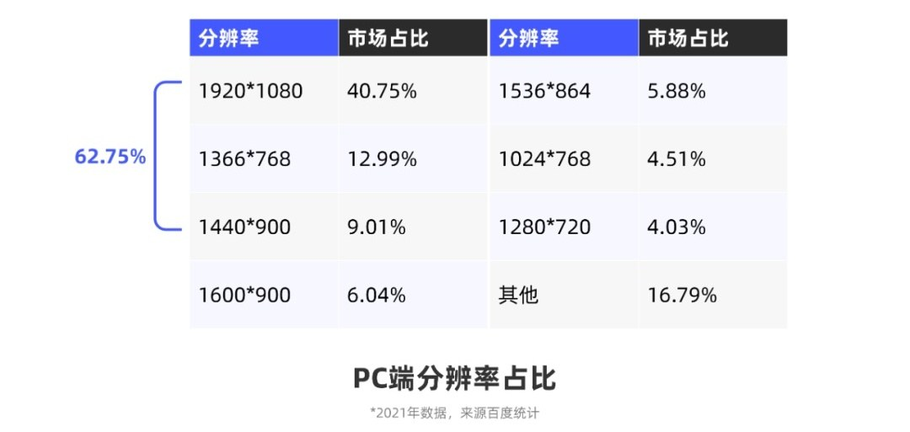
表中可看出「1920×1080」分辨率市场占比最高，可以以它为基准进行设计。排名前三的「1920×1080」「1366×768」「1440×900」占比合计达 62.75%，因此也可以基于兼容性原则——小屏适配大屏优于大屏适配小屏——选择「1440×900」作为设计尺寸。目前阿里巴巴和 Material Design 的 B 端对外规范中，都使用 1440 这个分辨率尺寸。
如果网站面向某个确定的群体，也可以以真实用户的设备作为基准。例如公司员工都用「1366×768」的笔记本办公，那么面向内部的网站就可以直接选择该分辨率作为画布标准。
首屏高度：别忽略浏览器与系统占用
网页必须在浏览器内打开，因此除了电脑分辨率，还需考虑浏览器占用高度；非全屏打开时，甚至要考虑系统本身占用的高度。
电脑系统会占用高度的有菜单栏和程序坞（或称任务栏）；浏览器占用高度需考虑的功能区有页签栏、地址栏和书签栏。
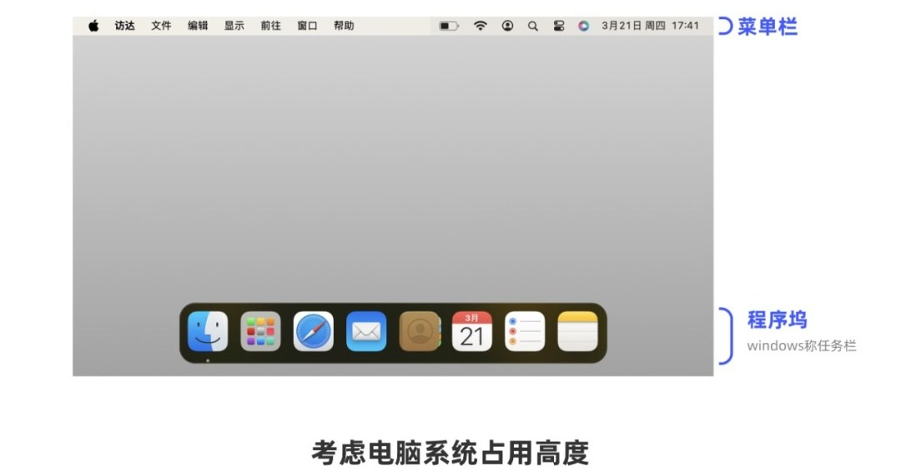
主流浏览器界面参数可参考下图。
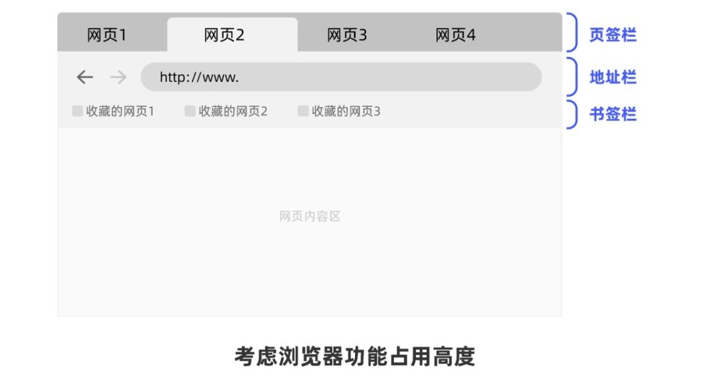
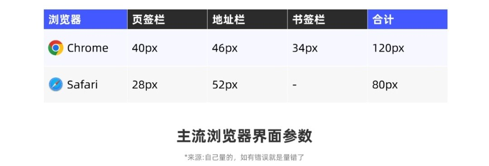
因此，严格来看真实首屏高度 = 电脑分辨率高度 − 浏览器高度 − 系统占用高度；宽松点看，可以只考虑电脑分辨率高度 − 浏览器高度。
02 / 导航选择：侧导航与顶导航之争
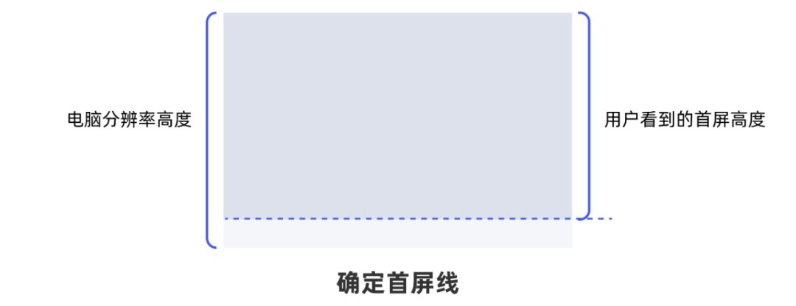
常见的导航模式有左导航和顶导航。2004 年，学者 JR Kingsburg 在《A comparison of three-level menu navigation structures for web design》论文中做过侧导航与顶导航的可用性研究，实验了 8 种导航模式（左导航 / 侧导航 × 一级 / 二级 / 三级导航），考察它们对用户导航时间、犹豫度、鼠标移动过程、错误选择次数的影响，并给出整体评价排名。
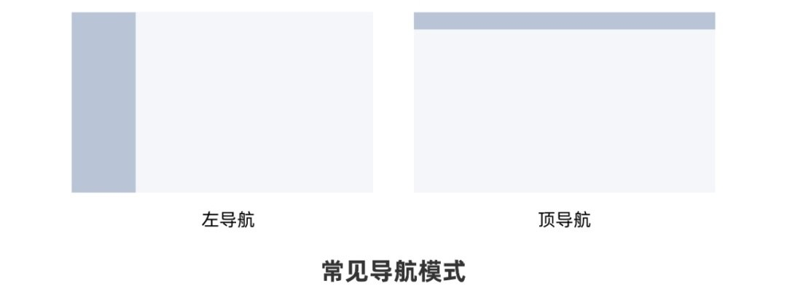
实验结论是：当一级导航为侧导航时，效率高、迟疑和错误更少，用户也较喜欢。
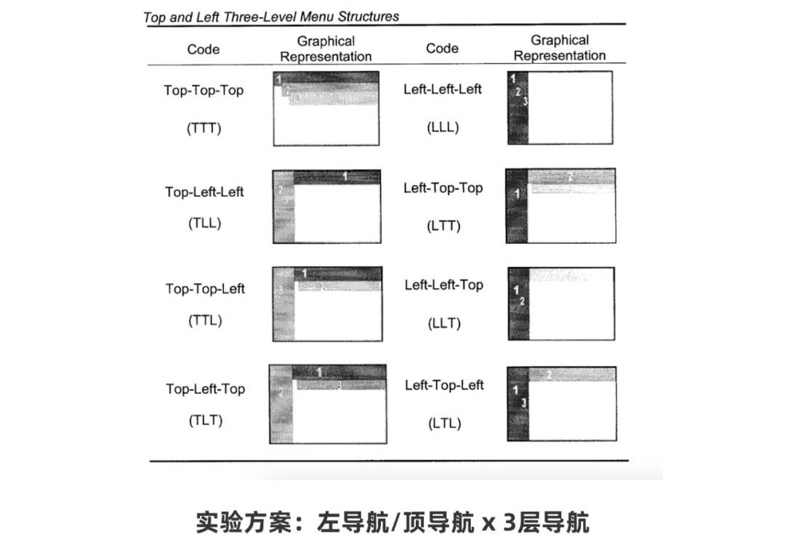
但也没必要因此抹杀顶导航——实验室的实验有局限性。论文中被试的任务都是具体的「购买 XXX」，而我们实际逛商城时也会有「不知道要买什么，随便逛逛」的场景。
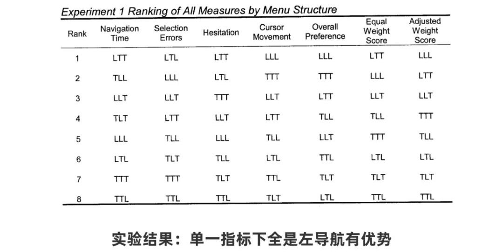
对实验结论更好的解读是：侧导航便于用户阅读和理解导航菜单，能更好地帮助用户完成任务。原因或许在于侧导航的画面占比相对顶导航大得多，展示空间更大；使用侧导航时自然换行比顶导航的间距更利于断句，更容易阅读理解；加上侧导航的二级菜单是稳定展示的（顶导航通常在鼠标挪走后就消失），因此能帮助用户更高效地完成任务。
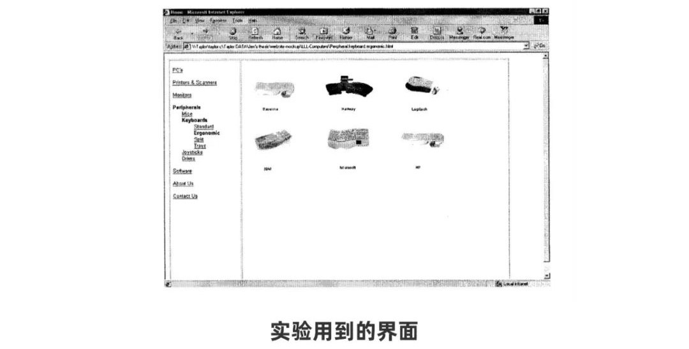
但侧导航也因其导航占用面积较大，不利于内容展示。
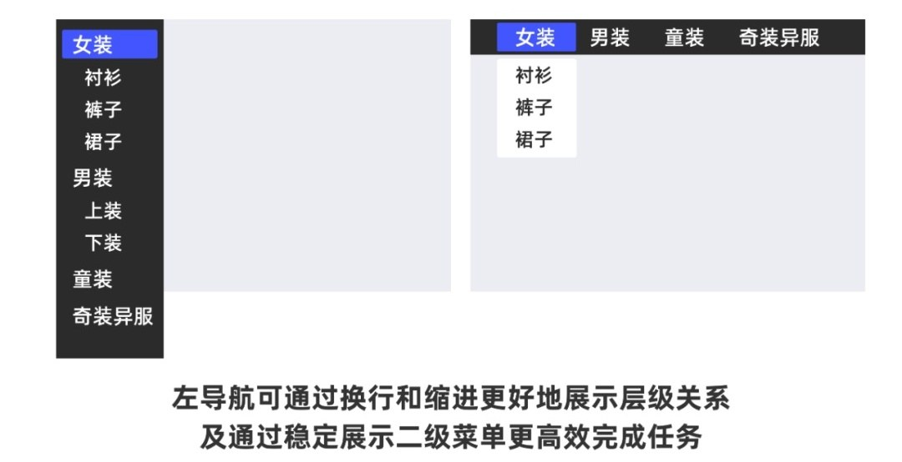
观察市面上的网页可以总结规律（暂不看侧导航与顶导航结合使用的网站）：使用侧导航的网站如邮箱类、后台类、机酒购票网站，都是任务型网站；使用顶导航的网站如图片素材类、图文消费类、视频类网站，都是内容型网站。
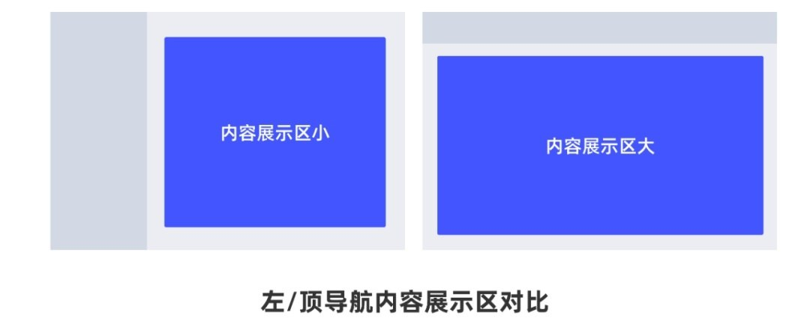
还可以通过同一个网站在不同场景下的设计来印证这一观点。百度在搜索场景与个人中心采用不同导航：搜索场景用户主要通过浏览结果获取信息，采用顶导航让出大量空间给内容呈现；个人中心用户大概率是完成某个具体任务（换个头像、改个名字、找某个收藏内容），采用侧导航方便快速找到功能。
可以说「任务型网站使用左导航，内容型产品使用顶导航」是设计师们的共识。也有一些网站选择顶导航与侧导航结合，顶导航放置登陆、设置、全局搜索等通用功能。
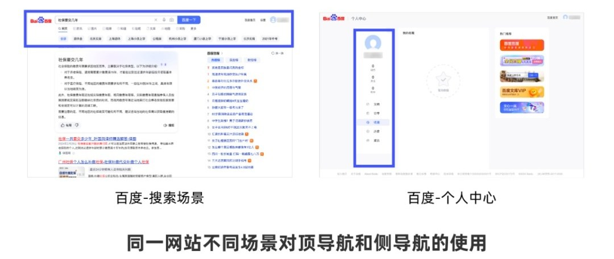
03 / 布局与适配：三种适配方式
侧导航的宽度通常设置为「200+8n」，从 208 到 272 都有网站使用。顶导航高度没有通用规范，从 36 到 80 都有使用案例，选择合适的高度即可。
不同 PC 端分辨率有不同的内容区大小参考，以下是一些网络数据，仅供参考。实际使用时会结合安全宽度范围 + 适配方式 + 栅格体系，确定最终的内容区。
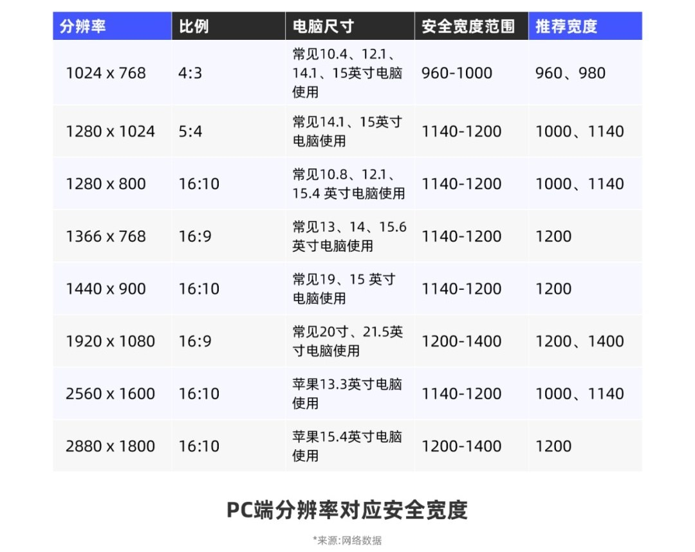
适配方式主要有三种：固定宽度、Responsive layout、响应式（Adaptive layout）。
1. 固定宽度
顾名思义，就是页面元素固定大小的适配方式，优缺点很明显：成本低，兼容性差。
2. Responsive layout
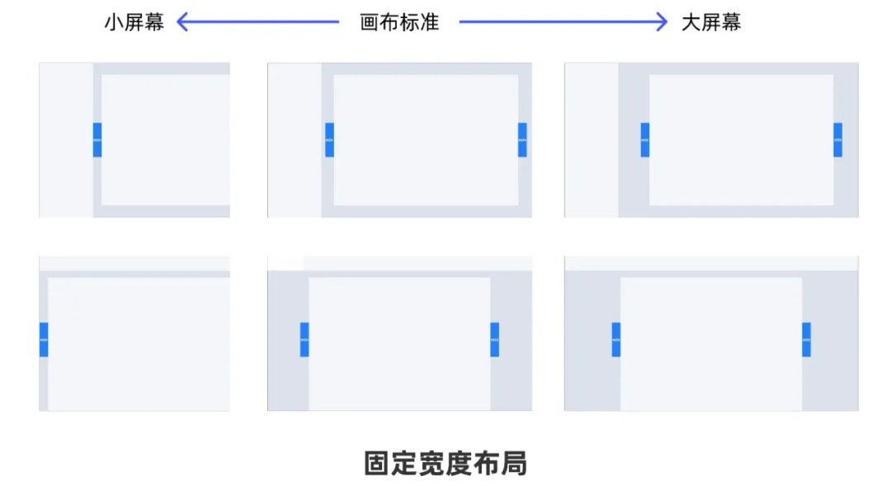
因为自适应布局和响应式布局这两个术语太接近，常因口误或翻译造成混淆，所以用英文来指代。Responsive layout 简单来说，就是把原本用 px 实现的设计改为用百分比或 rem 实现，使网页在整体布局不变的情况下，元素可以在不同分辨率上得以呈现。
Responsive layout 常基于栅格系统实现。栅格系统将页面或应用程序划分为等宽的列和行，以便内容排列和布局。最基本的栅格系统由 column 和 gutter 组成，有的系统还会设置 margin。
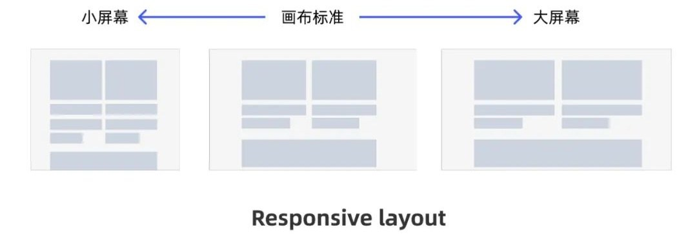
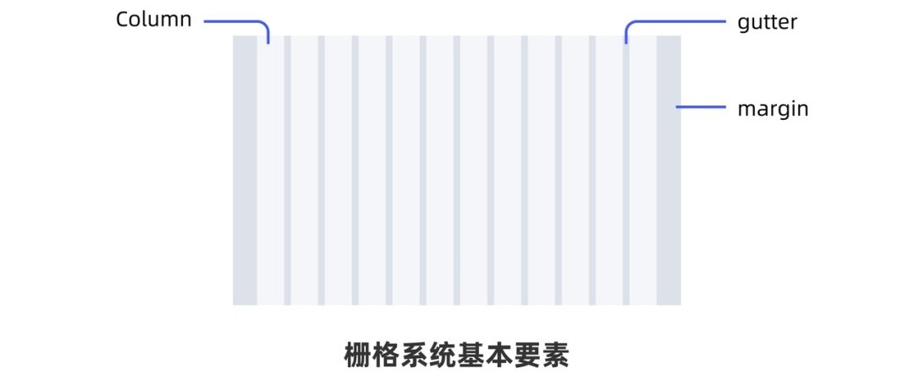
我们常误以为栅格系统只有 PC 端网站才会使用，但 Line 的设计规范网站也使用了栅格——移动端有些规范很可能就是栅格系统的简化。
设置好栅格后，把 column 从固定的 px 值改为百分比或 rem 值，就可以做到自适应。
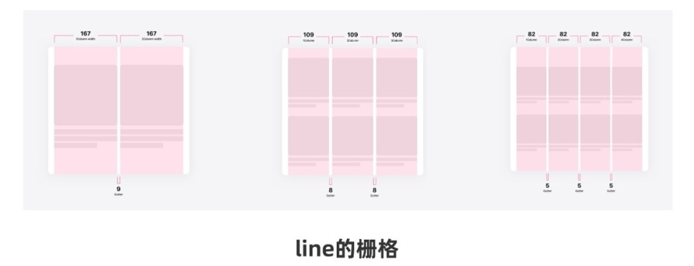
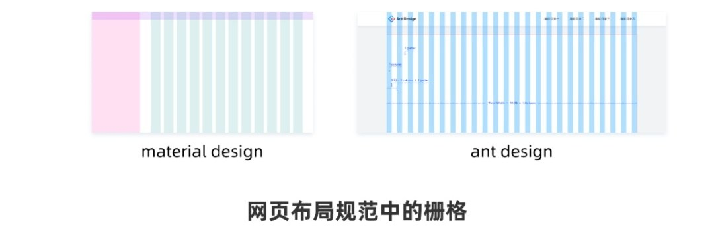
3. Adaptive layout
通过 @media 媒体查询，给不同大小的屏幕编写不同的样式代码来实现响应式布局。缺点是多套样式代码会很繁琐。
实际开发可以结合栅格布局 + 断点设定来实现 Adaptive layout。提前和开发沟通好适配方式可以提高效率：例如提前设置好栅格系统，确认布局方式后，规定设计新页面时需要适配的最大和最小屏幕，在后续输出设计稿时提前规划好布局。